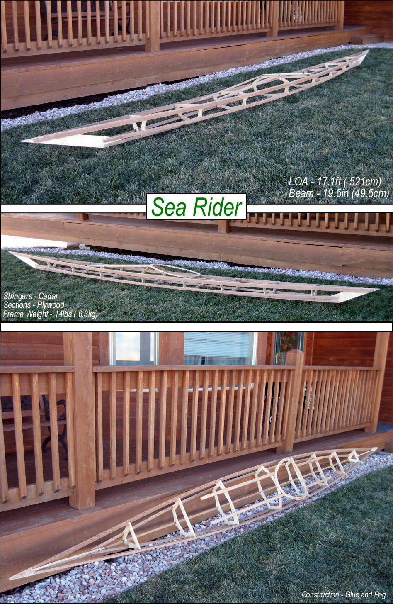

| Sea Rider ( Wood Frame) | Menu Previous Page Next Page |
|

This non-folding version of the Sea Rider frame was constructed using cedar stringers and plywood cross sections, stem plates, and coaming. The frame will next be coated with a waterbase Urethane ( Minwax Polycrylic). Using Peg and Glue construction results in a strong, stiff, and lightweight structure ( See next page). .
Detailed wood frame building instructions will be added to the manual soon. |
|